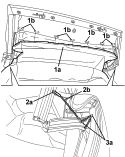
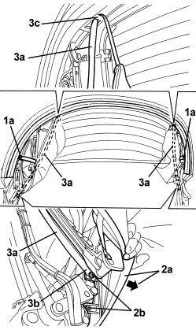
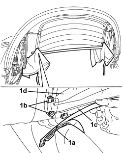
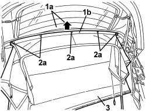
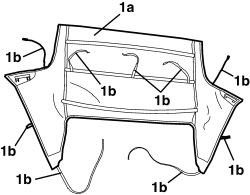
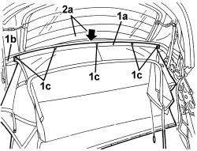
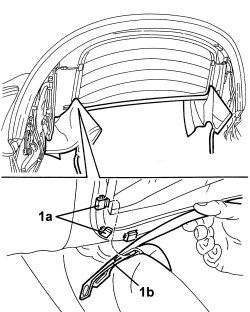
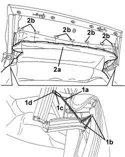

7030H21 HOOD INNER LINING - R.R.
- Path
- Procedures > 70 FITTINGS > 7030 SUN ROOF/GLASS PANEL > 7030H AUTOMATICALLY OPERATED HOOD > 7030H21 HOOD INNER LINING - R.R.
- Kind
- repair procedure (removal / refitting; the operation number is the code)
- Applies to
- engines: 2.2 JTS, 3.2 JTS; all production periods
- Interactive page
- https://sloeber94.github.io/elrnDB-aBrrSpdr/en/#/946003667
Applies to: engines: 2.2 JTS, 3.2 JTS; all production periods
 Removing
Removing
 Refitting
Refitting- Prepare the hood for the procedure.
Op. 0010T79 HOOD HYDRAULIC SYSTEM - DISCHARGE AND RESTORE PRESSURE
- Place the front part of the hood in a half open position using the electric control.
- Remove both seats.
Op. 7045A10 FRONT SEAT (ONE), LEFT OR RIGHT - R.R.
- Place protective cloths on the vehicle fittings and bodywork.
1. Disconnect front part (1a) of the interior lining from internal retainers (1b).
2. Working on both sides of the hood, drill out rivets (2a) securing links (2b) (keep the parts of the rivets).
3. Release links (2b) from retaining rings (3a).

Applies to: engines: 2.2 JTS, 3.2 JTS; all production periods
1. Drill out rivets (1a) securing the hood interior lining, then release ends (1b) of the links (keep the parts of the rivets).
2. Let interior lining (2a) lower itself.
3. Extract links (3a) through loops (3b) by releasing retainers (3c).

Applies to: engines: 2.2 JTS, 3.2 JTS; all production periods
- Raise the rear part of the hood using the electric controls
1. Working from both sides of the hood, drill out rivets (1a) (keep the parts of the rivets).
2. Move interior lining edges (2a) and undo bolts (2b).
3. Detach side links (3a) from terminal fastenings (3b) and from loops (3c).

Applies to: engines: 2.2 JTS, 3.2 JTS; all production periods
1. Release frame (1a) for the hood inner lining from retainers (1b) for upper profile (1c) of heated rear windscreen (1d).

Applies to: engines: 2.2 JTS, 3.2 JTS; all production periods
1. Manually raise the upper part of heated rear windscreen (1a) and uncover hoop (1b)
2. Drill out rivets (2a) (keep the parts of the rivets).
3. Keep the hood interior lining.

Applies to: engines: 2.2 JTS, 3.2 JTS; all production periods
- Remove any residues left from the removed rivets, from the inside of the hood tensioning hoops, working as follows:
- Using a jet of compressed air, blow down one open end of the ribs and retrieve any residues left by the removed rivets from the other open end of the ribs.
Applies to: engines: 2.2 JTS, 3.2 JTS; all production periods
Refitting
Removing1. Check that hood interior lining (1a) is not damaged.
In particular check that links (1b) are intact.

Applies to: engines: 2.2 JTS, 3.2 JTS; all production periods
- Restore the surface protection to the metal parts, which may have been damaged when the rivets were removed, etc.
1. Position hood interior lining edge (1a) on rib (1b) and secure it with rivets (1c).
2. Manually lower the upper part of heated rear windscreen (2a), disengaging it from rib (1b).

Applies to: engines: 2.2 JTS, 3.2 JTS; all production periods
1. Check the integrity of retainers (1a). Attach frame (1b) to retainers (1a) along the upper part of the heated rear windscreen.

Applies to: engines: 2.2 JTS, 3.2 JTS; all production periods
1. Working on both sides of the hood, insert side links (1a) into loops (1b) and position terminal fastenings (1c) in their housings.
2. Position side brackets (2a) and screw in bolts (2b).
3. Position side links (3a) and secure them with rivets (3b).
- Lower the rear part of the hood using the electric controls.

Applies to: engines: 2.2 JTS, 3.2 JTS; all production periods
1. Working on the front side of the hood, insert links (1a) into loops (1b) and engage retainers (1c).

Applies to: engines: 2.2 JTS, 3.2 JTS; all production periods
1. Bring perforated ends (1a) of the links into line with holes (1b) in the hoop and bring holes (1c) in the interior lining into line with holes (1b) and (1d) on the hoop, then secure the parts with rivets (1e).

Applies to: engines: 2.2 JTS, 3.2 JTS; all production periods
1. Working on both sides of the hood, insert links (1a) into retaining rings (1b), then secure their ends (1c) in place with rivets (1d).
2. Connect front part (2a) of the interior lining to internal retainers (2b).

Applies to: engines: 2.2 JTS, 3.2 JTS; all production periods
- Check that the hood opens/closes correctly, by moving it manually.
- Restore the hood hydraulic system pressure.
Op. 7030H03 HOOD MANUAL OPENING FOLLOWING DEACTIVATION OF HYDRAULIC SYSTEM - CARRY OUT PROCEDURE
- Later on, check that the hood opengs/closes properly using the electric control.
Topics linked from this page (3)
- 0010T79 HOOD HYDRAULIC SYSTEM - DISCHARGE AND RESTORE PRESSURE
- 7030H03 HOOD MANUAL OPENING FOLLOWING DEACTIVATION OF HYDRAULIC SYSTEM - CARRY OUT PROCEDURE
- 7045A10 FRONT SEAT (ONE), LEFT OR RIGHT - R.R.